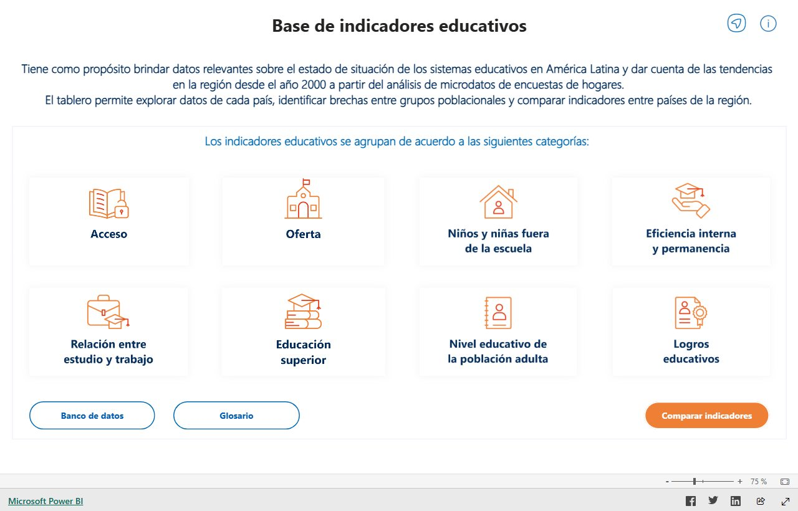

Indicators · IIPE UNESCO · 2023
Education indicators for Latin America
I designed, developed and implemented the Power BI interface for SITEAL to make it easier to explore and compare education indicators across Latin America. The work grew out of a team prototype that won the Audience Award at Hacking EDplanning 2022.
